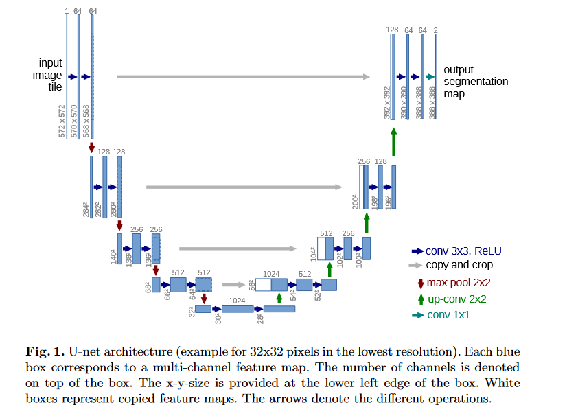
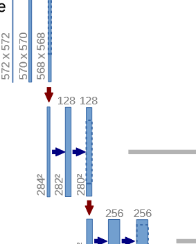

Flux is amazing and it’s far more than just an ML framework. Differentiable programming & Zygote, first class GPU support are features that set it apart among ML systems. The best thing I love about flux is mixing neural nets with differential equations, to get the best of black box and mechanistic modelling, this is what SciML doing.
Flux is fairly new, and needs attention of community ! In this article we’ll learn about how to implement a model in Flux.jl . We’ll walkthrough UNet implementation, which I’ve been working on lately to contribute to flux’s model zoo Metalhead.jl.
After reading this article you’ll learn about
- What is UNet?
- A brief overview of Flux API
- Reimplementing PyTorch Models in Julia
UNet 🥅
UNet is a deep learning model which was released in the paper U-Net: Convolutional Networks for Biomedical Image Segmentation. The architecture of the network looks like : Fig. 1 ( Source: UNet Paper)We’ll not go into detail about UNet theory, as the paper explains it in best way, and explaination here would be redundant anyway.

This tutorial will focus on implementation.
Let’s dive into code rightaway ! The article is written presuming that you have knowledge of implementing a neural networks in PyTorch ! We simply create a class that inherits nn.Module . We now create layers and assign it to class with self . When this model is instantiated, these layers will become attribute of the model object.
>>> exec(open("basic_model.py").read())
torch.Size([1, 5, 8, 8])Let’s see how it looks like in Julia.
julia> include("basic_model.jl");
(8, 8, 5, 1)Some Key things to note here are :
- Flux follows (H, W, C, N) standard for images while PyTorch uses (N, C, H, W)
- Chain function is similar to nn.Sequential method from PyTorch
- Julia implements Multiple Dispatch unlike PyThon which is designed on Single Dispatch paradigm. In short multiple dispatch allows us to implement a single method for different combination of different type arguments, unlike python which restricts the methods to be bound to a single object and reimplemented for different classes. Read more about multiple dispatch here .
Let’s see how official UNet implementation from Torchhub looks like
The author of original implementation (hereon referred just as “author”) created a helper method to create a convolutional block . This is a good practise called as DRY ( Do not Repeat Yourself).

This allows us to create these conv blocks (fig. 2 zooms into fig. 1 to show these conv blocks) just by passing input and output channels. To implement it with Flux, we reuse our knowledge from gist 1 :
This allows us to create these conv blocks (fig. 2 zooms into fig. 1 to show these conv blocks) just by passing input and output channels.
Pretty simple isn’t it ?
One thing to note here is, Flux doesn’t allow us to name the layers explicitly, the reason can be found in this github issue. Now let’s go ahead and see how layers were created by author.
Now we see that we have an encoder, bottleneck, decoder and an upconv layer. 1. Encoder : The four downstairs in Fig. 1 form the encoder block, and it encodes image by successive convolutions 2. Bottleneck : The layer between encoder and decoder is called bottleneck. The output of decoder is passed on to decoder & upconv block. 3. Decoder & Upconv block : The upconv block upsamples the input matrix, i.e. deconvolves the input to output with bigger size ( H x W ) than input. Decoder follows upconv layer and increases channels by performing convolution.
Let’s create the model class in Flux first. Julia doesn’t have classes, it has structs . So model struct would look like this.
To reduce the redundancy in code I’ll implement the layers as array of layers, it’ll allow us to write a clean forward pass later. Don’t forget to notice the relation between number of channels of different blocks of UNet model.
The unet_block is the convolutional block that we defined earlier is a simple chain of Convolutional and BatchNorm layers. We further chain these blocks keeping in mind the input & output features using the Chain function. See ! How easy it is to create a model in Flux. Now we have one last thing remaining, the forward pass . We do it like
in PyTorch. The cat operation orchestrates the connection between encoder and decoder demonstrated by copy and crop represented by gray arrow in Fig. 1.
But don’t you find the code above messy ? That’s where our definition of layers of arrays comes in. Let’s see how the forward pass is written for UNet.
Pretty simple & clean, we managed to keep the entire logic same.
Some key points to be noted here:
- σ is nothing else but sigmoid function ! Julia allows us to use all the mathematical symbols as variables . Thus, flux defined sigmoid as σ rather than sigmoid()
- Julia uses matlab like syntax for ranges (see 1:4 for iterating over 1, 2, 3, 4 and 4:-1:1 for 4, 3, 2, 1).
- Julia uses 1 based indexing.
- Any Julia function with a trailing ! tells that operation will be inplace ( remember pass by reference from C++ using & operation).
- The
returnkeyword in last line is redundant, simply writing σ(u.final_conv(out)) would work as Julia always returns the output of last line of code, from any code block.
That brings us to the end of this tutorial. Thanks for reading !
This is the second article of my first blog series Julia For the Win. You can find the previous article Kaggle x Julia : Advanced House Price Prediction : EDA.